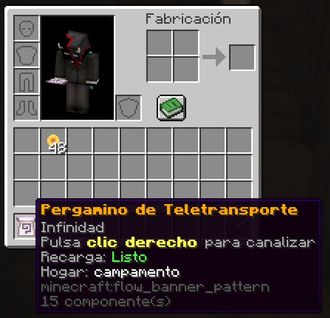

01
Tu Pergamino de Teletransporte
Es un pergamino encantado que te devuelve a tu hogar desde cualquier parte del mundo. No se gasta: puedes usarlo todas las veces que quieras y guardarlo para siempre.
Pasa el ratón por encima en tu inventario y verás tres líneas:
- Pulsa clic derecho para canalizar es cómo se usa.
- Recarga: Listo te dice si ya puedes viajar o cuánto falta.
- Hogar: campamento es el lugar al que te llevará.
